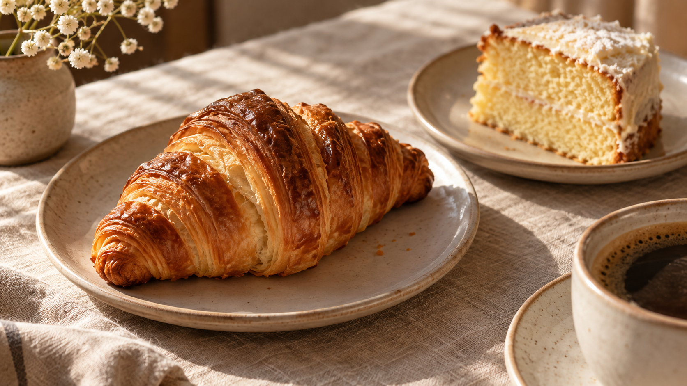
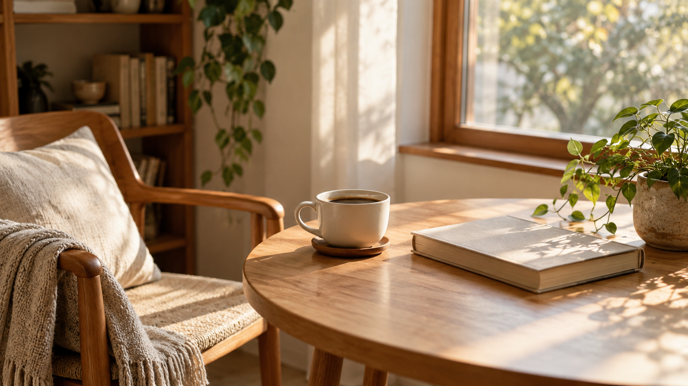

COFFEE & SLOW LIVING
Good coffee. A slower moment.
A journal about warm cups, little treats and making time for the ordinary things we enjoy.
Read cover storyAI-generated image. OpenAI
COFFEE & SLOW LIVING
A journal about warm cups, little treats and making time for the ordinary things we enjoy.
Read cover storyAI-generated image. OpenAI
AI-generated image. OpenAI
A warm cup, a quiet seat and a moment without a to-do list. Enjoy a little time in your own company.
Read the feature
AI-generated image. OpenAI
Enjoy a favourite pastry and notice the textures and little details that make a break feel special.
Read the sweet note
AI-generated image. OpenAI
A clear table and a comfortable chair can turn an everyday corner into a place to slow down.
Find your quiet corner